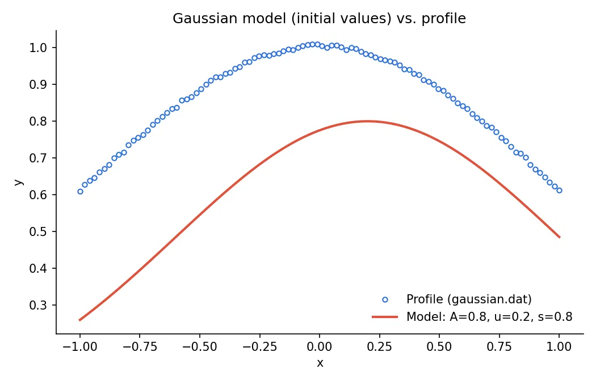
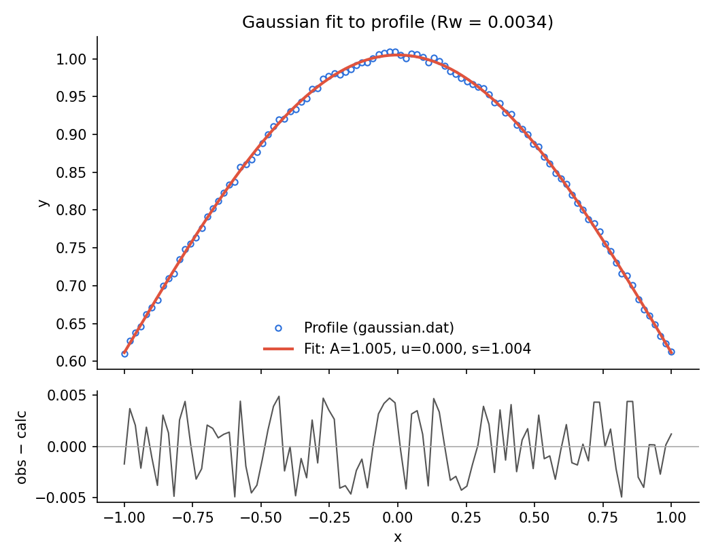
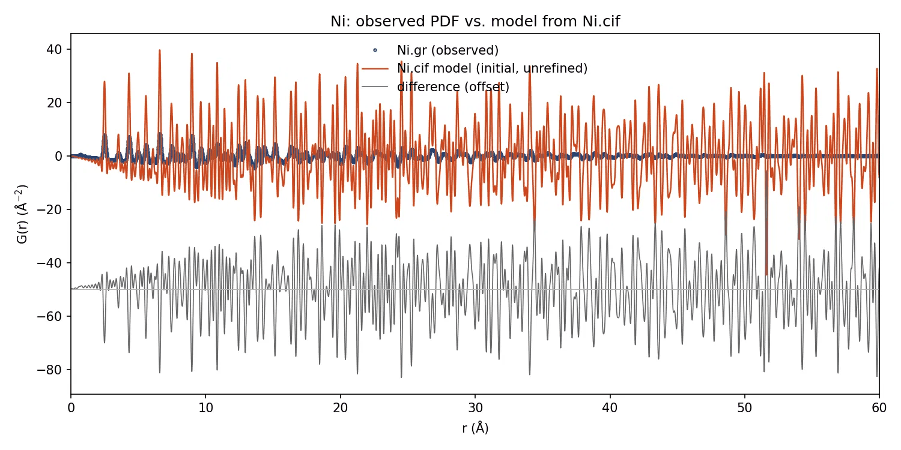
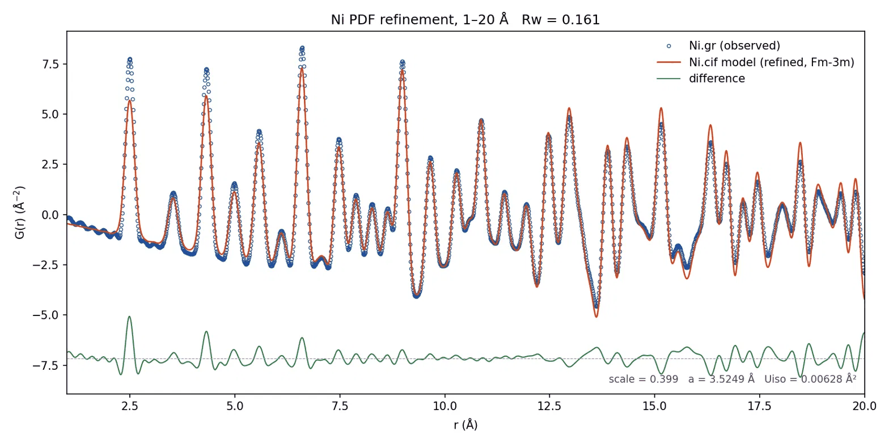

DiffPy Agent Interface
This interface is provided for agents, e.g. Claude Code and Codex,
which mainly utilizes the “tool” concept applied in most agent frameworks.
After connecting these tools to an agent, users can invoke DiffPy
functionalities and automate PDF refinements through conversation.
Setup
After you have installed diffpy.apps, the next step is to connect it to
your local agent. The configurations are required for the first time only.
diffpy.apps communicates with the agent through the
MCP (Model Context Protocol), and thus can be configured for any agents
that support the MCP. Here we provide the setup instructions for Claude
agent and ChatGPT agent.
For Claude User
How to connect to Claude Code Terminal
Install
Claude Codeterminal.
2. Copy the path to the conda executable. There are many commands available,
and here are two examples:
whereis conda # linux or macOS terminal
where.exe conda # windows powershell
Replace
<path/to/conda>with the path to yourcondaexecutable and<conda_env_name>with the name of your conda environment, then run the following command:
claude mcp add --scope local diffpy-apps -- \
<path/to/conda> run --no-capture-output -n <conda_env_name> \
python -m diffpy.apps.parametric_refinement.refinement_server \
Note
The claude mcp add command saves the server configuration according to the
scope you specify:
--scope local adds it to the project-specific section of
~/.claude.json.
--scope project adds it to the project’s .mcp.json.
--scope user adds it to the top-level configuration in
~/.claude.json.
The default scope is local.
Note
diffpy.apps MCP server is launched by conda instead of the commonly
used uv because one of diffpy.apps core dependencies, diffpy.srreal is
better managed via conda
Restart the
Claude CLIRun the following command in the conversation with
Claude CLIto verify the connection:
/mcp
Check Example Usage to see how to use it to perform PDF refinement.
To remove the configuration, run the following command in the the terminal:
claude mcp remove "diffpy-apps" -s local
replace local with the actual scope you used when adding the configuration.
How to connect to Claude Desktop
Install
Claude CodeDesktop.Open
Claude Desktopand open “Settings”.Navigate to the “Developer” section.
In the “Local MCP servers” region, click “Edit Config” and Open the configuration file. Its name should be
claude_desktop_config.json.

Figure 1: Screenshot of “Edit Config” in Claude Desktop.
5. Copy the path to the conda executable. There are many commands available, here are two examples
whereis conda # linux or macOS terminal
where.exe conda # windows powershell
Replace
<path/to/conda>with the path to yourcondaexecutable and<conda_env_name>with the name of your conda environment, then add the configuration as shown below.
"mcpServers": {
"diffpy.apps": {
"command": "</path/to/conda>",
"args": [
"run",
"--no-capture-output",
"-n",
"<conda_env_name>",
"python",
"-m",
"diffpy.apps.parametric_refinement.refinement_server"
]
}
}
For example, If Mr Neutron installed diffpy.apps in the diffpy_apps
conda environment, his claude_desktop_config.json in the Linux/macOS system
would look like this:
{
"mcpServers": {
"diffpy.apps": {
"command": "/Users/mr_neutron/miniconda3/bin/conda",
"args": [
"run",
"--no-capture-output",
"-n",
"diffpy.apps_env",
"python",
"-m",
"diffpy.apps.parametric_refinement.refinement_server"
]
}
},
"other_configurations": "other_configurations"
}
, and in the Windows system, it would look like this:
{
"mcpServers": {
"diffpy.apps": {
"command": "C:\\Users\\mr_neutron\\miniconda3\\condabin\\conda.bat",
"args": [
"run",
"--no-capture-output",
"-n",
"diffpy.apps_env",
"python",
"-m",
"diffpy.apps.parametric_refinement.refinement_server"
]
}
},
"other_configurations": "other_configurations"
}
Restart the
Claude.
8. Go to the same “Local MCP servers” section and verify that the
diffpy.apps server is listed and active.

Figure 2: Screenshot of active diffpy.apps server in Claude.
Check Example Usage to see how to use it to perform PDF refinement.
To remove the configuration, remove the added block from the configuration file.
For ChatGPT users
Install the Desktop version or Terminal version of
ChatGPT.Open the configuration file
~/.codex/config.toml.
3. Copy the path to the conda executable. There are many commands available, here are two examples
whereis conda # linux or macOS terminal
where.exe conda # windows powershell
Replace
<path/to/conda>with the path to yourcondaexecutable and<conda_env_name>with the name of your conda environment, then add the configuration as shown below.
[mcp_servers.diffpy_apps]
command = "<path/to/conda>"
args = [
"run",
"--no-capture-output",
"-n",
"<conda_env_name>",
"python",
"-m",
"diffpy.apps.parametric_refinement.refinement_server"
]
Note
In Windows, please make sure the full path is separated by
double backslashes (e.g., C:\\path\\to\\bin\\conda.bat).
Restart the
ChatGPT DesktoporCodex.Verify the connection of the
diffpy.appsserver.
For ChatGPT Desktop, open “Settings”, and navigate to the “Integration” section. Open
“Plugins” tab, and verify that the diffpy.apps server is listed in the
“MCPs” field and active.

Figure 2: Screenshot of active diffpy.apps server in ChatGPT.
For ChatGPT Terminal (Codex), enter the following command in the conversation with the agent:
/mcp
Check Example Usage to see how to use it to perform PDF refinement.
To remove the configuration, delete the added block from the configuration file.
Example Usage
After successfully connecting the diffpy.apps server to your agent,
you can interact with it to perform PDF refinement tasks.
Please see Setup for instructions.
Here we assume that you are using Claude Code Desktop as your agent. If you are
using a different agent, please replace Claude in the following steps.
General expression refinement
Download the
gaussian profileto your working directory.
2. Open Claude Code Desktop, launch the “Code” tab or select “Cowork” in “Chat or Cowork”
tab.
Note
In some Desktop distributions, the developers provide separate channels for agent interactions, and the Chat-only window may not have access to the MCP servers. When this happens, make sure to switch to the Agent interaction channel.
Terminal distributions can usually discover the MCP servers automatically.
Add the working directory folder to the
Claude CodeDesktop.Interact with the agent to solve tasks.
For example, Mr Neutron had the following conversation to have the agent solved a Gaussian refinement task.
> (Mr Neutron) Make sure you can find `diffpy.apps` MCP server and `gaussian.dat`
> (Agent) I find both...
> (Mr Neutron) Use diffpy.apps MCP server to create a equation model `Aexp(-(x-u)^2/(2s^2))`
> (Agent) I added an equation model called gaussian to the diffpy.apps session...
The server lists four parameters for it: A, u, s and x, all with no value yet...
> (Mr Neutron) Set the initial values of `A`, `u`, and `s` to be 0.8, 0.2,
and 0.8 , and make a plot of the equation model and the profile
> (Agent) I set A = 0.8, u = 0.2 and s = 0.8 on the gaussian model and plotted
it against the profile from gaussian.dat. To do so, I ...
And the following image is given by Claude Code Desktop:

Gaussian plot (before refinement). Generated by Claude Code
The conversation continues with Mr Neutron asking the agent to refine the equation model:
> (Mr Neutron) Refine the equation model against the profile, and plot the
refined equation model and the profile
> (Agent) The fit converged and the Gaussian matches the data closely,
with Rw = 0.0034. The data looks like a unit Gaussian, A = 1, u = 0, s = 1,
plus a little noise.

Gaussian plot (after refinement). Generated by Claude Code
Mr. Neutron is satisfied with the refined Gaussian plot.
PDF(Pair Distribution Function) refinement
It would be very similar to the General expression refinement, but copy the following files to your working directory instead.
For example, Mr Neutron had the following conversation to have the agent solved a Ni PDF refinement task.
> (Mr Neutron) Make sure you can find `diffpy.apps` MCP server, `Ni.cif` and `Ni.gr`
> (Agent) Yes, I found both files in your ...
> (Mr Neutron) Use diffpy.apps MCP server
1. Add `Ni.gr` as Profile
2. Add `Ni.cif` as PDF model
3. Plot them together
> (Agent) I added both files with the diffpy server and ...
and the following image shows the result:

Ni PDF plot(before refinement). Generated by Claude Code
Mr Neutron knows that the initial plot is not ideal because the structure has not been refined yet. So he continues:
> (Mr Neutron) The plot looks incorrect. Now refine the Ni structure:
1. constrain Ni structure according to it's spacegroup symmetry
2. refine ni.scale and other space group symmetry parameters
3. fit it over the range from 1-20 angstrum for simplicity
> (Agent) I refined the Ni model under Fm-3m symmetry over 1-20 Å.
Rw (the fit's weighted residual) went from 0.59
with only scale refined to 0.161 with all three parameters.
The plot is saved as ...
and the following image shows the refined result:

Ni PDF plot(after refinement). Generated by Claude Code
Mr Neutron is satisfied with the refined result.
How to add Diffpy agent skills
In previous example, Mr Neutron still needs to write down the sequence of actions for the simple PDF refinement task. The effort can be further reduced by adding our prepared agent skills into the context.
To use it, run the following command in the terminal after installing diffpy.apps.
diffpy-app agentify
claude and codex agent skills are supported. By default, it is
deployed as the claude agent skill. Use the --agent option to
specify the specific agent:
diffpy-app agentify --agent codex
To deploy the agentic skill to the system directory, use the --system flag:
diffpy-app agentify --system
To update the existing diffpy.cmi agentic skill, use the --update flag:
diffpy-app agentify --update
When the agent fails
An agent using diffpy.apps is not guaranteed to handle every complicated PDF
refinement task by itself. Its success relies on tools in
diffpy.apps being executed in the correct order, and the knowledge of
how to generate the correct sequence of tool invocations comes from the
LLM itself, the agent skills we have prepared, the local context and
the user’s prompt.
When the agent cannot handle a situation automatically, the user may need to intervene and manually guide the refinement process by providing instructions about the expected tool and arguments.
Try to ask “Please summarize available tools inside diffpy.apps concisely.”, and you will get the response similarly to this
diffpy.apps is a set of 28 tools for running diffpy.srfit-style refinements,
such as PDF fits, in a stateful session. Here they are by job:
...
Getting familiar with the available tools and their usage will allow you to
use diffpy.apps capabilities in your prompt effectively.
General instructions are usually sufficient for the agent to find
the correct tools.
How to contribute Diffpy agent skills
Skills are simply markdown files providing context for the agents. They help to enable the agent to follow the best practices, and to efficiently perform workflows sharing similar patterns. Please refer to the documentation from your favorite agent platform, such as Claude Documentation, for more details.
diffpy-app agentify fetches our prepared agent skills from
cmi-agent-skills GitHub repository.
If you are willing to contribute your skills, you can submit Pull Requests in
the same repository.
We expect the description of the workflows to follow the consistent format and wording
conventions, i.e. the diffpy macro language. Please see DiffPy Macro Interface for more
details. Thanks for sharing your work with the community!